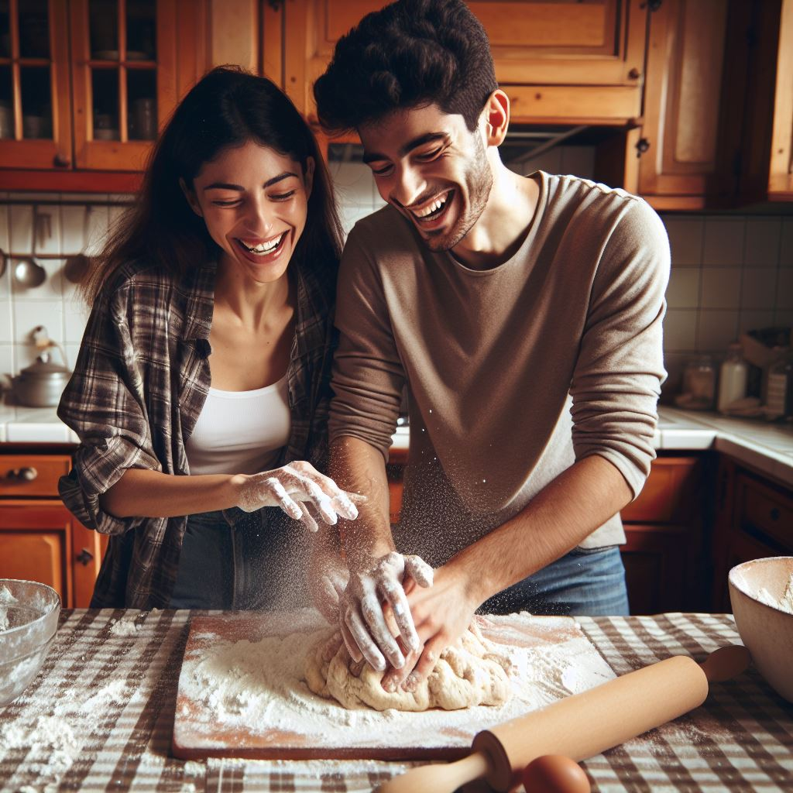

Bienvenido
En esta página encontrarás ideas fascinantes para conectar con amigos, pareja, hijos y reconectar contigo mismo.

Pareja
- ¿Cuál es tu momento favorito del día? ¿Por qué?
- ¿Qué te alegra el día?
- ¿Cuáles son algunas de tus metas para el próximo año?
- Si pudieras eliminar un mal hábito, ¿cuál sería?
- Si tuvieras menos inhibiciones, ¿cómo te comportarías diferente?
- ¿Qué cosas positivas han sucedido recientemente en tu vida?
- La vida es demasiado corta para tolerar ____________.
- Cuéntame de un hábito que estés orgulloso(a) de haber superado.
- ¿Cómo te ha impactado el miedo?
- ¿Cuáles son algunos de tus postres favoritos?
- ¿Cuál es una de tus preguntas favoritas para iniciar una conversación?
- ¿Qué es algo raro o atrevido que hayas comido?
- ¿Qué harías diferente si supieras que nadie te va a juzgar?
Soltero
- ¿Cuáles son algunas de tus posesiones más valiosas?
- ¿Qué es algo que nunca has hecho y te gustaría hacer antes de morir?
- ¿Qué te sorprendería que yo supiera sobre ti?
- ¿Qué has hecho o creado que te enorgullece?
- ¿En qué te gusta gastar dinero y por qué?
- ¿Cómo conociste a uno de tus mejores amigos? ¿Qué hace ahora?
- ¿Cuál es una de tus frases o citas favoritas?
- ¿Cuáles son algunas de tus metas de vida?
- ¿Cuál es uno de tus recuerdos favoritos de vacaciones?
- ¿Qué platillo te gustaría aprender a preparar bien?
- ¿Alguna vez has tenido un apodo? ¿Cuál fue y quién te lo puso?
- ¿Qué cosa compraste y luego te arrepentiste?
Amigos
- ¿Qué trabajo querías tener cuando eras niño?
- ¿Qué otras carreras te interesan fuera de tu trabajo actual?
- ¿Cuál es uno de los mejores regalos que has recibido?
- ¿Cuál fue tu primer trabajo? ¿Cómo lo conseguiste y cómo te fue?
- ¿Qué maestros han marcado tu vida? Explica.
- ¿Cuál es uno de los mejores hoteles en los que te has hospedado? ¿Por qué fue especial?
- ¿Qué te gustaría hacer realmente bien?
- ¿Cómo sería tu velada ideal?
- ¿Cuándo has superado tus propias expectativas? ¿Qué hiciste?
- Aparte del dinero, ¿qué has ganado en tu trabajo?
- ¿Qué has disfrutado del día de hoy hasta ahora?
- ¿Qué te gustó del día de ayer?
Hijos
- De todas las personas vivas, ¿con quién te gustaría cenar?
- ¿Cuáles son algunas de tus películas favoritas?
- ¿Quiénes son algunos de tus comediantes favoritos? ¿Por qué te hacen reír?
- ¿Qué amigo(a) te hace reír? ¿Cómo lo logra?
- ¿Cuáles son tus juegos de cartas favoritos y por qué?
- ¿Qué tipos de dulces te gustan más? ¿Por qué?
- ¿Cuáles son tus bebidas favoritas? ¿Por qué?
- ¿Cómo te describirían tus padres?
- ¿Qué libros te gustaban de niño? ¿Por qué?
- ¿Cuál es tu lema de vida?
- ¿Eres ahorrador(a) o gastador(a)? Explica.
- ¿Cuál es una de tus canciones favoritas? ¿Por qué?
- ¿Qué tipo de cumplidos disfrutas recibir?
Primera Cita

- ¿Qué cualidades valoras en una relación romántica?
- ¿Qué importancia tiene el tener una pareja para ti?
- ¿Cuál es tu preferencia al pagar después de una cita?
- Si pudieras atender cualquier causa o problema social, ¿Cuál elegirías?
- ¿Qué papel juegan tu familia y amigos en tu vida? ¿Tienes una relación cercana con ellos?
- ¿A quién considerarías tu sistema de apoyo?
- ¿Cómo encuentras el equilibrio entre el trabajo y tu vida personal? ¿Es importante para ti?